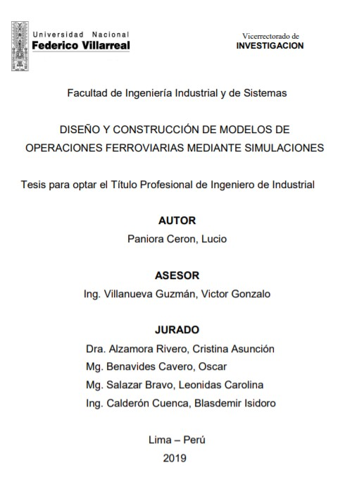
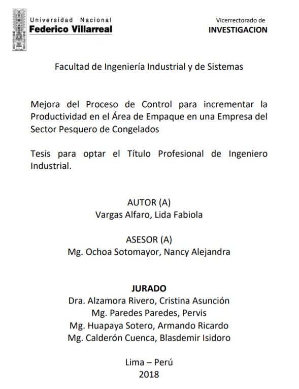

Implementación de un sistema de gestión de seguridad y salud en el trabajo
para mejorar la gestión en una empresa de servicios de publicidad
AUTOR: Valentín García, Anggie Carolina
 Descripcion:
Descripcion:
El presente trabajo, analizó la propuesta de una Implementación de un Sistema de Gestión de Seguridad y Salud en el Trabajo que ayudaría a mejorar la Gestión en una Empresa de Servicios de Publicidad; esto a raíz de una gran preocupación que tenía la población de una empresa, de no tener accidentes tras accidentes sin que se proponga alguna mejora y a la par, querer estar alineado a las leyes peruanas que apliquen. En el primer capítulo, podremos ver los distintos puntos que nos ayudaron a visualizar el Planteamiento del Problema; la real problemática que existió con respecto a la Seguridad y Salud en el Trabajo de la organización y los Objetivos que tuvimos durante todo este proyecto evaluando lo cuán importante es su implementación. En el segundo capítulo nos extenderemos explicando los Antecedentes de la Investigación, que nos ayudaron a sumar más puntos de vista con respecto a la implementación y las bases que lo sustentan para poder decir que este proyecto realmente es viable.
Elaboración de un plan de mantenimiento preventivo en los puentes de abordaje
para pasajeros en la compañía American Airlines Boston
AUTOR: Del Aguila Torres Wilbert Alfonso
Descripcion:
El presente trabajo de investigación, realizado bajo la modalidad de informe por experiencia profesional, titulado “Elaboración de un plan de mantenimiento preventivo en los puentes de abordaje de pasajeros en la compañía American Airlines, Boston, 2019”, tiene como objetivo principal elaborar un plan de mantenimiento preventivo para garantizar el buen funcionamiento de los puentes de abordaje de la Estación de Boston en el Aeropuerto Internacional de Logan. Debido a que el principal problema está orientado a las deficiencias en el mantenimiento de los puentes de abordaje, lo cual provoca costosas multas por el gobierno de Estados Unidos, se plantea elaborar un plan de mantenimiento preventivo con cero tolerancias. Esto significa que no se podrá tener prórrogas en la ejecución de los mantenimientos programados a los 18 puentes de abordaje con los que cuenta la compañía American Airlines.
Implementación y mantenimiento de un sistema de gestión de calidad basado en
la norma iso/iec 17025 a los laboratorios de la dirección de metrología del instituto
nacional de calidad (INACAL)
AUTOR: Dejo Aguinaga, José Luis Martín
Descripcion:
En el presente informe se desarrolla la implementación y mantenimiento de un Sistema de Gestión de la Calidad bajo los requisitos de la norma ISO/IEC 17025 a los laboratorios de calibración de la Dirección de Metrología del Instituto Nacional de Calidad (INACAL), entidad pública que tiene por finalidad promover y asegurar el cumplimiento de la Política Nacional para la Calidad con miras al desarrollo y la competitividad de las actividades económicas y la protección del consumidor. A través de la implementación y mantenimiento de esta norma ISO/IEC 17025 se busca asegurar la calidad de los resultados reportados en los documentos de calibración que se emiten y puedan ser usados estos en la toma de decisiones en las empresas del sector industrial, salud, comercio, seguridad, etc., ya sea para el control o mejora de un sistema de medición.
Mejora de la gestión de almacenes en el área logística de la empresa
JSCIMPORT SRL, Surco
AUTOR:
Santa Cruz Carhuamaca, Juan Máximo
Descripcion:
El presente informe de experiencia profesional titulado “Mejora de la gestión de almacenes en el área Logística de la empresa JSCIMPORT SRL, Surco 2019”, cuyo problema identificado se centra en el área logística relacionado con la gestión de almacenes, tuvo como objetivo principal: Determinar en qué medida mejora la gestión de almacenes en el área Logística de la empresa JSCIMPORT SRL, Surco 2019. Ante la problemática presente en la empresa se utilizó las herramientas en primera instancia las 5´S con la finalidad de mejorar el orden en los almacenes, así como atender de manera oportuna y eficaz los requerimientos de los clientes y luego la clasificación de los productos que se comercializa mediante el sistema ABC, de tal manera que se tenga la certeza de cómo es la rotación de los productos que se comercializan para programar las compras tanto nacionales e internacionales a través de la importación.
Plan de marketing para la linea de equipos de limpieza en la empresa vidagro
S.A.C.
AUTOR:
Alarcon Quintana, Edinson Ernesto
Descripcion:
El presente Plan de Marketing para la línea de equipos de limpieza en la empresa VIDAGRO S.A.C, que es una empresa reconocida como líder en la comercialización de equipos agrícolas en el mercado peruano; representa una hoja de ruta para alcanzar los objetivos propuestos para esta nueva unidad de negocios como es la línea de equipos de limpieza (Hidrolavadoras y Aspiradoras); debido a que la empresa utilizó como canal de distribución principal a las empresas conformantes del Grupo Picón y a algunos Subdistribuidores de la línea de equipos agrícolas y forestales, por lo que los resultados comerciales no fueron los esperados ya que había una gran demanda insatisfecha por estos productos, de ahí la necesidad de buscar otros canales de distribución con Subdistribuidores especializados en la comercialización de maquinarias y equipamiento para talleres, asimismo contar con los instrumentos de gestión como el presente Plan de Marketing, entre otros.

Diseño y construcción de modelos de operaciones ferroviarias mediante
simulaciones
AUTOR:
Paniora Ceron, Lucio
Descripcion:
El presente trabajo tiene por finalidad exponer, en primer lugar, los fundamentos teóricos para el diseño y construcción de modelos o escenarios de operaciones ferroviarias mediante simulaciones, haciendo énfasis en el uso de herramientas de simulación como método eficiente para el diseño del servicio ferroviario. En segundo lugar, se procederá a describir la metodología para el diseño y construcción de modelos de operaciones ferroviarias mediante simulación, para lo cual es necesario seguir los pasos correspondientes tales como el modelamiento de la infraestructura, la definición del Material Rodante, la definición de los servicios y los horarios, así como la ejecución de la simulación del servicio ferroviario. Finalmente, a fin de poner en práctica los conocimientos teóricos detallados, se procede a aplicar la metodología al caso de la Línea 4 del Metro de Lima y Callao, para lo cual se utilizará el software especializado en simulaciones ferroviarias.

Mejora del Proceso de Control para incrementar la Productividad en el Área de
Empaque en una Empresa del Sector Pesquero de Congelados
AUTOR:
Vargas Alfaro, Lida Fabiola
Descripcion:
En el escenario actual de la pesca es de vital importancia contar con la información correcta en el tiempo correcto. Esta investigación tiene como objetivo la mejora del control en el proceso de registro de información en una empresa pesquera del sector de consumo humano directo división de congelados aplicando metodologías agiles de proyectos tales como el marco de trabajo SCRUM, apoyado de técnicas como inventarios, documentación histórica, entrevistas, etc. mejorando el proceso interno y estableciendo pautas para que de forma colaborativa entre áreas puedan tener los datos correctos y así tomar decisiones adecuadas cuando se requiera. Se definió como variable independiente la mejora del proceso de control y como variable dependiente la productividad en el área de empaque, concluyendo en que son variables correlacionadas y existe una dependencia por tanto la productividad será consecuencia del tratamiento al proceso de control.